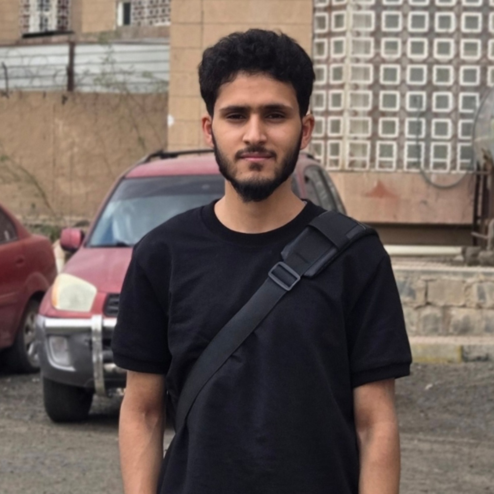

Recent IT graduate with a strong foundation in web development and programming. Experienced in
building projects using HTML, CSS, JavaScript, PHP, Java, and Python. Passionate about developing
responsive and user-friendly web applications, with a growing focus on modern frontend technologies.
Eager to contribute to a dynamic team and continue expanding technical and problem-solving skills.
January 2022 - Present
December 2025 - February 2026
January 2023 - Present